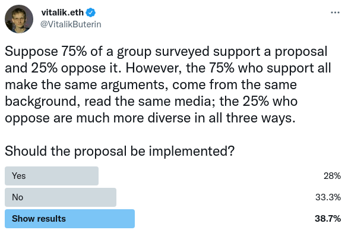
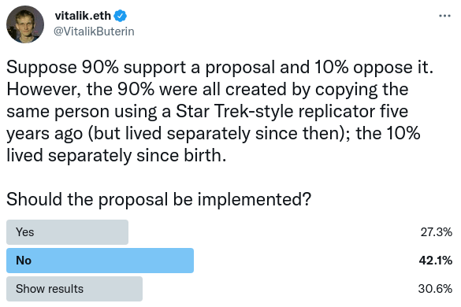

Where to use a blockchain in non-financial applications?
2022 Jun 12
See all posts
Where to use a blockchain in non-financial applications?
Special thanks to Shrey Jain and Puja Ohlhaver for substantial
feedback and review
Recently, there has been a growing amount of interest in using
blockchains for not-just-financial applications. This is a trend that I
have been
strongly in favor of, for
various reasons. In the last month,
Puja Ohlhaver, Glen Weyl and I collaborated on a paper
describing a more detailed vision for what could be done with a richer
ecosystem of soulbound tokens making claims describing various kinds of
relationships. This has led to some discussion, particularly focused on
whether or not it makes any sense to use a blockchain in a decentralized
identity ecosystem:
It's worth zooming out and asking a broader question: where does it
make sense, in general, to use a blockchain in non-financial
applications? Should we move toward a world where even decentralized
chat apps work by every message being an on-chain transaction containing
the encrypted message? Or, alternatively, are blockchains only good for
finance (say, because network effects mean that money has a unique need
for a "global view"), with all other applications better done using
centralized or more local systems?
My own view tends to be, like with blockchain voting, far from
the "blockchain everywhere" viewpoint, but also far from a "blockchain
minimalist". I see the value of blockchains in many situations,
sometimes for really important goals like trust and censorship
resistance but sometimes purely for convenience. This post will attempt
to describe some types of situations where blockchains might be useful,
especially in the context of identity, and where they are not.
This post is not a complete list and intentionally leaves many
things out. The goal is rather to elucidate some common
categories.
User account key changes
and recovery
One of the biggest challenges in a cryptographic account system is
the issue of key changes. This can happen in a few cases:
- You're worried that your current key might get lost or stolen, and
you want to switch to a different key
- You want to switch to a different cryptographic
algorithm (eg. because you're worried quantum computers will
come soon and you want to upgrade to post-quantum)
- Your key got lost, and you want to regain access to
your account
- Your key got stolen, and you want to regain
exclusive access to your account (and you don't want the thief to be
able to do the same)
[1] and [2] are relatively simple in that they can be done in a fully
self-sovereign way: you control key X, you want to switch to
key Y, so you publish a message signed with X saying "Authenticate me
with Y from now on", and everyone accepts that.
But notice that even for these simpler key change scenarios,
you can't just use cryptography. Consider the
following sequence of events:
- You are worried that key A might get stolen, so you sign a message
with A saying "I use B now"
- A year later, a hacker actually does steal key A. They sign a
message saying with A saying "I use C now", where C is their own
key
From the point of view of someone coming in later who just receives
these two messages, they see that A is no longer used, but they don't
know whether "replace A with B" or "replace A with C" has higher
priority.

This is equivalent to the famous double-spend
problem in designing decentralized currencies, except instead of the
goal being to prevent a previous owner of a coin from being able to send
it again, here the goal is to prevent the previous key controlling an
account from being able to change the key. Just like creating a
decentralized currency, doing account management in a decentralized way
requires something like a blockchain. A blockchain can
timestamp the key change messages, providing common knowledge over
whether B or C came first.
[3] and [4] are harder. In general, my own preferred solution is multisig and social recovery
wallets, where a group of friends, family members and other contacts
can transfer control of your account to a new key if it gets lost or
stolen. For critical operations (eg. transferring large quantities of
funds, or signing an important contract), participation of this group
can also be required.
But this too requires a blockchain. Social recovery using secret
sharing is possible, but it is more difficult in practice: if you no
longer trust some of your contacts, or if they want to change their own
keys, you have no way to revoke access without changing your key
yourself. And so we're back to requiring some form of on-chain
record.
One subtle but important idea in the
DeSoc paper is that to preserve non-transferability, social recovery
(or "community recovery") of profiles might actually need to be
mandatory. That is, even if you sell your account, you can
always use community recovery to get the account back. This would solve
problems like not-actually-reputable drivers buying
verified accounts on ride sharing platforms. That said, this is a
speculative idea and does not have to be fully implemented to get the
other benefits of blockchain-based identity and reputation systems.
Note that so far this is a limited use-case of blockchains:
it's totally okay to have accounts on-chain but do everything else
off-chain. There's a place for these kinds of hybrid visions;
Sign-in With Ethereum is good simple
example of how this could be done in practice.
Modifying and revoking
attestations
Alice goes to Example College and gets a degree in example studies.
She gets a digital record certifying this, signed with Example College's
keys. Unfortunately, six months later, Example College discovers that
Alice had committed a large amount of plagiarism, and revokes her
degree. But Alice continues to use her old digital record to go around
claiming to various people and institutions that she has a degree.
Potentially, the attestation could even carry permissions - for
example, the right to log in to the college's online forum - and Alice
might try to inappropriately access that too. How do we prevent
this?
The "blockchain maximalist" approach would be to make the degree an
on-chain NFT, so Example College can then issue an on-chain transaction
to revoke the NFT. But perhaps this is needlessly expensive: issuance is
common, revocation is rare, and we don't want to require Example College
to issue transactions and pay fees for every issuance if they don't have
to. So instead we can go with a hybrid solution: make initial
degree an off-chain signed message, and do revocations
on-chain. This is the approach that OpenCerts uses.
The fully off-chain solution, and the one advocated by many
off-chain verifiable credentials proponents, is that Example College
runs a server where they publish a full list of their revocations (to
improve privacy, each attestation can come with an attached nonce and
the revocation list can just be a list of nonces).
For a college, running a server is not a large burden. But for any
smaller organization or individual, managing "yet another server script"
and making sure it stays online is a significant burden for IT people.
If we tell people to "just use a server" out of
blockchain-phobia, then the likely outcome is that everyone outsources
the task to a centralized provider. Better to keep the system
decentralized and just use a blockchain - especially now that rollups,
sharding and other techniques are finally starting to come online to
make the cost of a blockchain cheaper and cheaper.
Negative reputation
Another important area where off-chain signatures do not suffice is
negative reputation - that is, attestations where the
person or organization that you're making attestations about might not
want you to see them. I'm using "negative reputation" here as a
technical term: the most obvious motivating use case is attestations
saying bad things about someone, like a bad review or a report that
someone acted abusively in some context, but there are also use cases
where "negative" attestations don't imply bad behavior - for example,
taking out a loan and wanting to prove that you have not taken out too
many other loans at the same time.
With off-chain claims, you can do positive reputation,
because it's in the interest of the recipient of a claim to show it to
appear more reputable (or make a ZK-proof about it), but you can't do
negative reputation, because someone can always choose to only
show the claims that make them look good and leave out all the
others.
Here, making attestations on-chain actually does fix things. To
protect privacy, we can add encryption and zero knowledge proofs: an
attestation can just be an on-chain record with data encrypted to the
recipient's public key, and users could prove lack of negative
reputation by running a zero knowledge proof that walks over the entire
history of records on chain. The proofs being on-chain and the
verification process being blockchain-aware makes it easy to verify that
the proof actually did walk over the whole history and did not
skip any records. To make this computationally feasible, a user could
use incrementally verifiable
computation (eg. Halo)
to maintain and prove a tree of records that were encrypted to them, and
then reveal parts of the tree when needed.
Negative reputation and revoking attestations are in some sense
equivalent problems: you can revoke an attestation by adding another
negative-reputation attestation saying "this other attestation doesn't
count anymore", and you can implement negative reputation with
revocation by piggybacking on positive reputation: Alice's degree at
Example College could be revoked and replaced with a degree saying
"Alice got a degree in example studies, but she took out a loan".
Is negative reputation a
good idea?
One critique of negative reputation that we sometimes hear is: but
isn't negative reputation a dystopian scheme of "scarlet
letters", and shouldn't we try our best to do things with positive
reputation instead?
Here, while I support the goal of avoiding unlimited
negative reputation, I disagree with the idea of avoiding it entirely.
Negative reputation is important for many use cases. Uncollateralized
lending, which is highly valuable for improving capital efficiency
within the blockchain space and outside, clearly benefits from it. Unirep Social shows
a proof-of-concept social media platform that combines a high level of
anonymity with a privacy-preserving negative reputation system to limit
abuse.
Sometimes, negative reputation can be empowering and positive
reputation can be exclusionary. An online forum where every unique human gets the
right to post until they get too many "strikes" for misbehavior is more
egalitarian than a forum that requires some kind of "proof of good
character" to be admitted and allowed to speak in the first place.
Marginalized people whose lives are mostly "outside the system", even if
they actually are of good character, would have a hard time getting such
proofs.
Readers of the strong civil-libertarian persuasion may also want to
consider the case of an anonymous reputation system for clients of sex
workers: you want to protect privacy, but you also might want a system
where if a client mistreats a sex worker, they get a "black mark" that
encourages other workers to be more careful or stay away. In this way,
negative reputation that's hard to hide can actually empower the
vulnerable and protect safety. The point here is not to defend some
specific scheme for negative reputation; rather, it's to show
that there's very real value that negative reputation unlocks, and a
successful system needs to support it somehow.
Negative reputation does not have to be unlimited negative
reputation: I would argue that it should always be possible to create a
new profile at some cost (perhaps sacrificing a lot or all of your
existing positive reputation). There is a balance between too
little accountability and too much accountability. But having
some technology that makes negative reputation possible in the
first place is a prerequisite for unlocking this design space.
Committing to scarcity
Another example of where blockchains are valuable is issuing
attestations that have a provably limited quantity. If I want to make an
endorsement for someone (eg. one might imagine a company looking for
jobs or a government visa program looking at such endorsements), the
third party looking at the endorsement would want to know whether I'm
careful with endorsements or if I give them off to pretty much whoever
is friends with me and asks nicely.
The ideal solution to this problem would be to make endorsements
public, so that endorsements become incentive-aligned: if I endorse
someone who turns out to do something wrong, everyone can discount my
endorsements in the future. But often, we also want to preserve privacy.
So instead what I could do is publish hashes of each endorsement
on-chain, so that anyone can see how many I have given out.
An even more effective usecase is many-at-a-time issuance: if an
artists wants to issue N copies of a "limited-edition" NFT, they could
publish on-chain a single hash containing the Merkle root of
the NFTs that they are issuing. The single issuance prevents them from
issuing more after the fact, and you can publish the number (eg. 100)
signifying the quantity limit along with the Merkle root, signifying
that only the leftmost 100 Merkle branches are valid.

By publishing a single Merkle root and max count on-chain, you can
commit issue a limited quantity of attestations. In this example, there
are only five possible valid Merkle branches that could satisfy the
proof check. Astute readers may notice a conceptual similarity to Plasma
chains.
Common knowledge
One of the powerful properties of blockchains is that they create
common
knowledge: if I publish something on-chain, then Alice can see
it, Alice can see that Bob can see it, Charlie can see that Alice can
see that Bob can see it, and so on.
Common knowledge is often important for coordination. For example, a
group of people might want to speak out about an issue, but only feel
comfortable doing so if there's enough of them speaking out at the same
time that they have safety in numbers. One possible way to do this is
for one person to start a "commitment pool" around a particular
statement, and invite others to publish hashes (which are private at
first) denoting their agreement. Only if enough people participate
within some period of time, all participants would be required to have
their next on-chain message publicly reveal their position.
A design like this could be accomplished with a combination of zero
knowledge proofs and blockchains (it could be done without blockchains,
but that requires either witness encryption,
which is not yet available, or trusted
hardware, which has deeply problematic security assumptions). There
is a large design space around these kinds of ideas that is very
underexplored today, but could easily start to grow once the ecosystem
around blockchains and cryptographic tools grows further.
Interoperability
with other blockchain applications
This is an easy one: some things should be on-chain to better
interoperate with other on-chain applications. Proof of humanity being
an on-chain NFT makes it easier for projects to automatically airdrop or
give governance rights to accounts that have proof of humanity profiles.
Oracle data being on-chain makes it easier for defi projects to read. In
all of these cases, the blockchain does not remove the need for trust,
though it can house structures like DAOs that manage the trust. But the
main value that being on-chain provides is simply being in the same
place as the stuff that you're interacting with, which needs a
blockchain for other reasons.
Sure, you could run an oracle off-chain and require the data
to be imported only when it needs to be read, but in many cases that
would actually be more expensive, and needlessly impose
complexity and costs on developers.
Open-source metrics
One key goal of the Decentralized
Society paper is the idea that it should be possible to make
calculations over the graph of attestations. A really important one
is measuring decentralization and diversity. For
example, many people seem
to agree
that an ideal voting mechanism would somehow keep diversity in mind,
giving greater weight to projects that are supported not just by the
largest number of coins or even humans, but by the
largest number of truly distinct perspectives.
Quadratic funding as implemented in Gitcoin Grants also includes some
explicitly
diversity-favoring logic to mitigate attacks.
Another natural place where measurements and scores are going to be
valuable is reputation systems. This already exists in
a centralized form with ratings, but it can be done in a much more
decentralized way where the algorithm is transparent while at the same
time preserving more user privacy.
Aside from tightly-coupled use cases like this, where attempts to
measure to what extent some set of people is connected and feed that
directly into a mechanism, there's also broader use case of helping a
community understand itself. In the case of measuring decentralization,
this might be a matter of identifying areas where concentration is
getting too high, which might require a response. In all of these cases,
running computerized algorithms over large bodies of attestations and
commitments and doing actually important things with the outputs is
going to be unavoidable.
We
should not try to abolish quantified metrics, we should try to
make better ones
Kate Sills expressed her skepticism of the goal of making
calculations over reputation, an argument that applies both for public
analytics and for individuals ZK-proving over their reputation (as in
Unirep Social):
The process of evaluating a claim is very subjective and
context-dependent. People will naturally disagree about the
trustworthiness of other people, and trust depends on the context ...
[because of this] we should be extremely skeptical of any proposal to
"calculate over" claims to get objective results.
I this case, I agree with the importance of subjectivity and context,
but I would disagree with the more expansive claim that avoiding
calculations around reputation entirely is the right goal to be aiming
towards. Pure individualized analysis does not scale far beyond Dunbar's
number, and any complex society that is attempting to support
large-scale cooperation has to rely on aggregations and simplifications
to some extent.
That said, I would argue that an open-participation ecosystem of
attestations (as opposed to the centralized one we have today) can get
us the best of both worlds by opening up space for better
metrics. Here are some principles that such designs could follow:
- Inter-subjectivity: eg. a reputation should not be
a single global score; instead, it should be a more subjective
calculation involving the person or entity being evaluated but also the
viewer checking the score, and potentially even other aspects of the
local context.
- Credible
neutrality: the scheme should clearly not leave room for
powerful elites to constantly manipulate it in their own favor. Some
possible ways to achieve this are maximum transparency
and infrequent change of the algorithm.
- Openness: the ability to make meaningful inputs,
and to audit other people's outputs by running the check yourself,
should be open to anyone, and not just restricted to a small number of
powerful groups.
If we don't create good large-scale aggregates of social data, then
we risk ceding market share to opaque and centralized social credit
scores instead.
Not all data should be on-chain, but making some data public
in a common-knowledge way can help increase a community's legibility to
itself without creating data-access disparities that could be abused to
centralize control.
As a data store
This is the really controversial use case, even among those who
accept most of the others. There is a common viewpoint in the blockchain
space that blockchains should only be used in those cases where they are
truly needed and unavoidable, and everywhere else we should use other
tools.
This attitude makes sense in a world where transaction fees are very
expensive, and blockchains are uniquely incredibly inefficient. But it
makes less sense in a world where blockchains have rollups and sharding
and transaction fees have dropped down to a few cents, and the
difference in redundancy between a blockchain and non-blockchain
decentralized storage might only be 100x.
Even in such a world, it would not make sense to store all
data on-chain. But small text records? Absolutely. Why? Because
blockchains are just a really convenient place to store
stuff. I maintain a copy of this blog on IPFS. But uploading to
IPFS often takes an hour, it requires centralized gateways for users to
access it with anything close to website levels of latency, and
occasionally files drop off and no longer become visible. Dumping the
entire blog on-chain, on the other hand, would solve that problem
completely. Of course, the blog is too big to actually be
dumped on-chain, even post-sharding, but the same principle applies to
smaller records.
Some examples of small cases where putting data on-chain just to
store it may be the right decision include:
- Augmented
secret sharing: splitting your password into
N
pieces where any M = N-R of the pieces can recover the
password, but in a way where you can choose the contents of all
N of the pieces. For example, the pieces could all be
hashes of passwords, secrets generated through some other tool, or
answers to security questions. This is done by publishing an extra
R pieces (which are random-looking) on-chain, and doing
N-of-(N+R) secret sharing on the whole
set.
- ENS optimization. ENS could be made more
efficient by combining all records into a single hash, only publishing
the hash on-chain, and requiring anyone accessing the data to get the
full data off of IPFS. But this would significantly increase complexity,
and add yet another software dependency. And so ENS keeps data on-chain
even if it is longer than 32 bytes.
- Social metadata - data connected to your account
(eg. for sign-in-with-Ethereum
purposes) that you want to be public and that is very short in length.
This is generally not true for larger data like profile pictures (though
if the picture happens to be a small SVG
file it could be!), but it is true for text records.
- Attestations and access permissions. Especially if
the data being stored is less than a few hundred bytes long, it might be
more convenient to store the data on-chain than put the hash on-chain
and the data off-chain.
In a lot of these cases, the tradeoff isn't just cost but also
privacy in those edge cases where keys or cryptography break. Sometimes,
privacy is only somewhat important, and the occasional loss of privacy
from leaked keys or the faraway specter of quantum computing revealing
everything in 30 years is less important than having a very high degree
of certainty that the data will remain accessible. After all, off-chain
data stored in your "data wallet" can get hacked too.
But sometimes, data is particularly sensitive, and that can be
another argument against putting it on-chain, and keeping it stored
locally as a second layer of defense. But note that in those cases, that
privacy need is an argument not just against blockchains, but against
all decentralized storage.
Conclusions
Out of the above list, the two I am personally by far the most
confident about are interoperability with other blockchain
applications and account management. The first
is on-chain already, and the second is relatively cheap (need to use the
chain once per user, and not once per action), the case for it is clear,
and there really isn't a good non-blockchain-based solution.
Negative reputation and revocations
are also important, though they are still relatively early-stage use
cases. A lot can be done with reputation by relying on off-chain
positive reputation only, but I expect that the case for revocation and
negative reputation will become more clear over time. I expect there to
be attempts to do it with centralized servers, but over time it should
become clear that blockchains are the only way to avoid a hard choice
between inconvenience and centralization.
Blockchains as data stores for short text records
may be marginal or may be significant, but I do expect at least some of
that kind of usage to keep happening. Blockchains really are just
incredibly convenient for cheap and reliable data retrieval, where data
continues to be retrievable whether the application has two users or two
million. Open-source metrics are still a very
early-stage idea, and it remains to see just how much can be done and
made open without it becoming exploitable (as eg. online reviews, social
media karma and the like get exploited all the time). And common
knowledge games require convincing people to accept entirely
new workflows for socially important things, so of course that is an
early-stage idea too.
I have a large degree of uncertainty in exactly what level of
non-financial blockchain usage in each of these categories makes sense,
but it seems clear that blockchains as an enabling tool in these areas
should not be dismissed.
Where to use a blockchain in non-financial applications?
2022 Jun 12 See all postsSpecial thanks to Shrey Jain and Puja Ohlhaver for substantial feedback and review
Recently, there has been a growing amount of interest in using blockchains for not-just-financial applications. This is a trend that I have been strongly in favor of, for various reasons. In the last month, Puja Ohlhaver, Glen Weyl and I collaborated on a paper describing a more detailed vision for what could be done with a richer ecosystem of soulbound tokens making claims describing various kinds of relationships. This has led to some discussion, particularly focused on whether or not it makes any sense to use a blockchain in a decentralized identity ecosystem:
It's worth zooming out and asking a broader question: where does it make sense, in general, to use a blockchain in non-financial applications? Should we move toward a world where even decentralized chat apps work by every message being an on-chain transaction containing the encrypted message? Or, alternatively, are blockchains only good for finance (say, because network effects mean that money has a unique need for a "global view"), with all other applications better done using centralized or more local systems?
My own view tends to be, like with blockchain voting, far from the "blockchain everywhere" viewpoint, but also far from a "blockchain minimalist". I see the value of blockchains in many situations, sometimes for really important goals like trust and censorship resistance but sometimes purely for convenience. This post will attempt to describe some types of situations where blockchains might be useful, especially in the context of identity, and where they are not. This post is not a complete list and intentionally leaves many things out. The goal is rather to elucidate some common categories.
User account key changes and recovery
One of the biggest challenges in a cryptographic account system is the issue of key changes. This can happen in a few cases:
[1] and [2] are relatively simple in that they can be done in a fully self-sovereign way: you control key X, you want to switch to key Y, so you publish a message signed with X saying "Authenticate me with Y from now on", and everyone accepts that.
But notice that even for these simpler key change scenarios, you can't just use cryptography. Consider the following sequence of events:
From the point of view of someone coming in later who just receives these two messages, they see that A is no longer used, but they don't know whether "replace A with B" or "replace A with C" has higher priority.
This is equivalent to the famous double-spend problem in designing decentralized currencies, except instead of the goal being to prevent a previous owner of a coin from being able to send it again, here the goal is to prevent the previous key controlling an account from being able to change the key. Just like creating a decentralized currency, doing account management in a decentralized way requires something like a blockchain. A blockchain can timestamp the key change messages, providing common knowledge over whether B or C came first.
[3] and [4] are harder. In general, my own preferred solution is multisig and social recovery wallets, where a group of friends, family members and other contacts can transfer control of your account to a new key if it gets lost or stolen. For critical operations (eg. transferring large quantities of funds, or signing an important contract), participation of this group can also be required.
But this too requires a blockchain. Social recovery using secret sharing is possible, but it is more difficult in practice: if you no longer trust some of your contacts, or if they want to change their own keys, you have no way to revoke access without changing your key yourself. And so we're back to requiring some form of on-chain record.
One subtle but important idea in the DeSoc paper is that to preserve non-transferability, social recovery (or "community recovery") of profiles might actually need to be mandatory. That is, even if you sell your account, you can always use community recovery to get the account back. This would solve problems like not-actually-reputable drivers buying verified accounts on ride sharing platforms. That said, this is a speculative idea and does not have to be fully implemented to get the other benefits of blockchain-based identity and reputation systems.
Note that so far this is a limited use-case of blockchains: it's totally okay to have accounts on-chain but do everything else off-chain. There's a place for these kinds of hybrid visions; Sign-in With Ethereum is good simple example of how this could be done in practice.
Modifying and revoking attestations
Alice goes to Example College and gets a degree in example studies. She gets a digital record certifying this, signed with Example College's keys. Unfortunately, six months later, Example College discovers that Alice had committed a large amount of plagiarism, and revokes her degree. But Alice continues to use her old digital record to go around claiming to various people and institutions that she has a degree. Potentially, the attestation could even carry permissions - for example, the right to log in to the college's online forum - and Alice might try to inappropriately access that too. How do we prevent this?
The "blockchain maximalist" approach would be to make the degree an on-chain NFT, so Example College can then issue an on-chain transaction to revoke the NFT. But perhaps this is needlessly expensive: issuance is common, revocation is rare, and we don't want to require Example College to issue transactions and pay fees for every issuance if they don't have to. So instead we can go with a hybrid solution: make initial degree an off-chain signed message, and do revocations on-chain. This is the approach that OpenCerts uses.
The fully off-chain solution, and the one advocated by many off-chain verifiable credentials proponents, is that Example College runs a server where they publish a full list of their revocations (to improve privacy, each attestation can come with an attached nonce and the revocation list can just be a list of nonces).
For a college, running a server is not a large burden. But for any smaller organization or individual, managing "yet another server script" and making sure it stays online is a significant burden for IT people. If we tell people to "just use a server" out of blockchain-phobia, then the likely outcome is that everyone outsources the task to a centralized provider. Better to keep the system decentralized and just use a blockchain - especially now that rollups, sharding and other techniques are finally starting to come online to make the cost of a blockchain cheaper and cheaper.
Negative reputation
Another important area where off-chain signatures do not suffice is negative reputation - that is, attestations where the person or organization that you're making attestations about might not want you to see them. I'm using "negative reputation" here as a technical term: the most obvious motivating use case is attestations saying bad things about someone, like a bad review or a report that someone acted abusively in some context, but there are also use cases where "negative" attestations don't imply bad behavior - for example, taking out a loan and wanting to prove that you have not taken out too many other loans at the same time.
With off-chain claims, you can do positive reputation, because it's in the interest of the recipient of a claim to show it to appear more reputable (or make a ZK-proof about it), but you can't do negative reputation, because someone can always choose to only show the claims that make them look good and leave out all the others.
Here, making attestations on-chain actually does fix things. To protect privacy, we can add encryption and zero knowledge proofs: an attestation can just be an on-chain record with data encrypted to the recipient's public key, and users could prove lack of negative reputation by running a zero knowledge proof that walks over the entire history of records on chain. The proofs being on-chain and the verification process being blockchain-aware makes it easy to verify that the proof actually did walk over the whole history and did not skip any records. To make this computationally feasible, a user could use incrementally verifiable computation (eg. Halo) to maintain and prove a tree of records that were encrypted to them, and then reveal parts of the tree when needed.
Negative reputation and revoking attestations are in some sense equivalent problems: you can revoke an attestation by adding another negative-reputation attestation saying "this other attestation doesn't count anymore", and you can implement negative reputation with revocation by piggybacking on positive reputation: Alice's degree at Example College could be revoked and replaced with a degree saying "Alice got a degree in example studies, but she took out a loan".
Is negative reputation a good idea?
One critique of negative reputation that we sometimes hear is: but isn't negative reputation a dystopian scheme of "scarlet letters", and shouldn't we try our best to do things with positive reputation instead?
Here, while I support the goal of avoiding unlimited negative reputation, I disagree with the idea of avoiding it entirely. Negative reputation is important for many use cases. Uncollateralized lending, which is highly valuable for improving capital efficiency within the blockchain space and outside, clearly benefits from it. Unirep Social shows a proof-of-concept social media platform that combines a high level of anonymity with a privacy-preserving negative reputation system to limit abuse.
Sometimes, negative reputation can be empowering and positive reputation can be exclusionary. An online forum where every unique human gets the right to post until they get too many "strikes" for misbehavior is more egalitarian than a forum that requires some kind of "proof of good character" to be admitted and allowed to speak in the first place. Marginalized people whose lives are mostly "outside the system", even if they actually are of good character, would have a hard time getting such proofs.
Readers of the strong civil-libertarian persuasion may also want to consider the case of an anonymous reputation system for clients of sex workers: you want to protect privacy, but you also might want a system where if a client mistreats a sex worker, they get a "black mark" that encourages other workers to be more careful or stay away. In this way, negative reputation that's hard to hide can actually empower the vulnerable and protect safety. The point here is not to defend some specific scheme for negative reputation; rather, it's to show that there's very real value that negative reputation unlocks, and a successful system needs to support it somehow.
Negative reputation does not have to be unlimited negative reputation: I would argue that it should always be possible to create a new profile at some cost (perhaps sacrificing a lot or all of your existing positive reputation). There is a balance between too little accountability and too much accountability. But having some technology that makes negative reputation possible in the first place is a prerequisite for unlocking this design space.
Committing to scarcity
Another example of where blockchains are valuable is issuing attestations that have a provably limited quantity. If I want to make an endorsement for someone (eg. one might imagine a company looking for jobs or a government visa program looking at such endorsements), the third party looking at the endorsement would want to know whether I'm careful with endorsements or if I give them off to pretty much whoever is friends with me and asks nicely.
The ideal solution to this problem would be to make endorsements public, so that endorsements become incentive-aligned: if I endorse someone who turns out to do something wrong, everyone can discount my endorsements in the future. But often, we also want to preserve privacy. So instead what I could do is publish hashes of each endorsement on-chain, so that anyone can see how many I have given out.
An even more effective usecase is many-at-a-time issuance: if an artists wants to issue N copies of a "limited-edition" NFT, they could publish on-chain a single hash containing the Merkle root of the NFTs that they are issuing. The single issuance prevents them from issuing more after the fact, and you can publish the number (eg. 100) signifying the quantity limit along with the Merkle root, signifying that only the leftmost 100 Merkle branches are valid.
By publishing a single Merkle root and max count on-chain, you can commit issue a limited quantity of attestations. In this example, there are only five possible valid Merkle branches that could satisfy the proof check. Astute readers may notice a conceptual similarity to Plasma chains.
Common knowledge
One of the powerful properties of blockchains is that they create common knowledge: if I publish something on-chain, then Alice can see it, Alice can see that Bob can see it, Charlie can see that Alice can see that Bob can see it, and so on.
Common knowledge is often important for coordination. For example, a group of people might want to speak out about an issue, but only feel comfortable doing so if there's enough of them speaking out at the same time that they have safety in numbers. One possible way to do this is for one person to start a "commitment pool" around a particular statement, and invite others to publish hashes (which are private at first) denoting their agreement. Only if enough people participate within some period of time, all participants would be required to have their next on-chain message publicly reveal their position.
A design like this could be accomplished with a combination of zero knowledge proofs and blockchains (it could be done without blockchains, but that requires either witness encryption, which is not yet available, or trusted hardware, which has deeply problematic security assumptions). There is a large design space around these kinds of ideas that is very underexplored today, but could easily start to grow once the ecosystem around blockchains and cryptographic tools grows further.
Interoperability with other blockchain applications
This is an easy one: some things should be on-chain to better interoperate with other on-chain applications. Proof of humanity being an on-chain NFT makes it easier for projects to automatically airdrop or give governance rights to accounts that have proof of humanity profiles. Oracle data being on-chain makes it easier for defi projects to read. In all of these cases, the blockchain does not remove the need for trust, though it can house structures like DAOs that manage the trust. But the main value that being on-chain provides is simply being in the same place as the stuff that you're interacting with, which needs a blockchain for other reasons.
Sure, you could run an oracle off-chain and require the data to be imported only when it needs to be read, but in many cases that would actually be more expensive, and needlessly impose complexity and costs on developers.
Open-source metrics
One key goal of the Decentralized Society paper is the idea that it should be possible to make calculations over the graph of attestations. A really important one is measuring decentralization and diversity. For example, many people seem to agree that an ideal voting mechanism would somehow keep diversity in mind, giving greater weight to projects that are supported not just by the largest number of coins or even humans, but by the largest number of truly distinct perspectives.


Quadratic funding as implemented in Gitcoin Grants also includes some explicitly diversity-favoring logic to mitigate attacks.
Another natural place where measurements and scores are going to be valuable is reputation systems. This already exists in a centralized form with ratings, but it can be done in a much more decentralized way where the algorithm is transparent while at the same time preserving more user privacy.
Aside from tightly-coupled use cases like this, where attempts to measure to what extent some set of people is connected and feed that directly into a mechanism, there's also broader use case of helping a community understand itself. In the case of measuring decentralization, this might be a matter of identifying areas where concentration is getting too high, which might require a response. In all of these cases, running computerized algorithms over large bodies of attestations and commitments and doing actually important things with the outputs is going to be unavoidable.
We should not try to abolish quantified metrics, we should try to make better ones
Kate Sills expressed her skepticism of the goal of making calculations over reputation, an argument that applies both for public analytics and for individuals ZK-proving over their reputation (as in Unirep Social):
I this case, I agree with the importance of subjectivity and context, but I would disagree with the more expansive claim that avoiding calculations around reputation entirely is the right goal to be aiming towards. Pure individualized analysis does not scale far beyond Dunbar's number, and any complex society that is attempting to support large-scale cooperation has to rely on aggregations and simplifications to some extent.
That said, I would argue that an open-participation ecosystem of attestations (as opposed to the centralized one we have today) can get us the best of both worlds by opening up space for better metrics. Here are some principles that such designs could follow:
If we don't create good large-scale aggregates of social data, then we risk ceding market share to opaque and centralized social credit scores instead.
Not all data should be on-chain, but making some data public in a common-knowledge way can help increase a community's legibility to itself without creating data-access disparities that could be abused to centralize control.
As a data store
This is the really controversial use case, even among those who accept most of the others. There is a common viewpoint in the blockchain space that blockchains should only be used in those cases where they are truly needed and unavoidable, and everywhere else we should use other tools.
This attitude makes sense in a world where transaction fees are very expensive, and blockchains are uniquely incredibly inefficient. But it makes less sense in a world where blockchains have rollups and sharding and transaction fees have dropped down to a few cents, and the difference in redundancy between a blockchain and non-blockchain decentralized storage might only be 100x.
Even in such a world, it would not make sense to store all data on-chain. But small text records? Absolutely. Why? Because blockchains are just a really convenient place to store stuff. I maintain a copy of this blog on IPFS. But uploading to IPFS often takes an hour, it requires centralized gateways for users to access it with anything close to website levels of latency, and occasionally files drop off and no longer become visible. Dumping the entire blog on-chain, on the other hand, would solve that problem completely. Of course, the blog is too big to actually be dumped on-chain, even post-sharding, but the same principle applies to smaller records.
Some examples of small cases where putting data on-chain just to store it may be the right decision include:
Npieces where anyM = N-Rof the pieces can recover the password, but in a way where you can choose the contents of allNof the pieces. For example, the pieces could all be hashes of passwords, secrets generated through some other tool, or answers to security questions. This is done by publishing an extraRpieces (which are random-looking) on-chain, and doingN-of-(N+R)secret sharing on the whole set.In a lot of these cases, the tradeoff isn't just cost but also privacy in those edge cases where keys or cryptography break. Sometimes, privacy is only somewhat important, and the occasional loss of privacy from leaked keys or the faraway specter of quantum computing revealing everything in 30 years is less important than having a very high degree of certainty that the data will remain accessible. After all, off-chain data stored in your "data wallet" can get hacked too.
But sometimes, data is particularly sensitive, and that can be another argument against putting it on-chain, and keeping it stored locally as a second layer of defense. But note that in those cases, that privacy need is an argument not just against blockchains, but against all decentralized storage.
Conclusions
Out of the above list, the two I am personally by far the most confident about are interoperability with other blockchain applications and account management. The first is on-chain already, and the second is relatively cheap (need to use the chain once per user, and not once per action), the case for it is clear, and there really isn't a good non-blockchain-based solution.
Negative reputation and revocations are also important, though they are still relatively early-stage use cases. A lot can be done with reputation by relying on off-chain positive reputation only, but I expect that the case for revocation and negative reputation will become more clear over time. I expect there to be attempts to do it with centralized servers, but over time it should become clear that blockchains are the only way to avoid a hard choice between inconvenience and centralization.
Blockchains as data stores for short text records may be marginal or may be significant, but I do expect at least some of that kind of usage to keep happening. Blockchains really are just incredibly convenient for cheap and reliable data retrieval, where data continues to be retrievable whether the application has two users or two million. Open-source metrics are still a very early-stage idea, and it remains to see just how much can be done and made open without it becoming exploitable (as eg. online reviews, social media karma and the like get exploited all the time). And common knowledge games require convincing people to accept entirely new workflows for socially important things, so of course that is an early-stage idea too.
I have a large degree of uncertainty in exactly what level of non-financial blockchain usage in each of these categories makes sense, but it seems clear that blockchains as an enabling tool in these areas should not be dismissed.